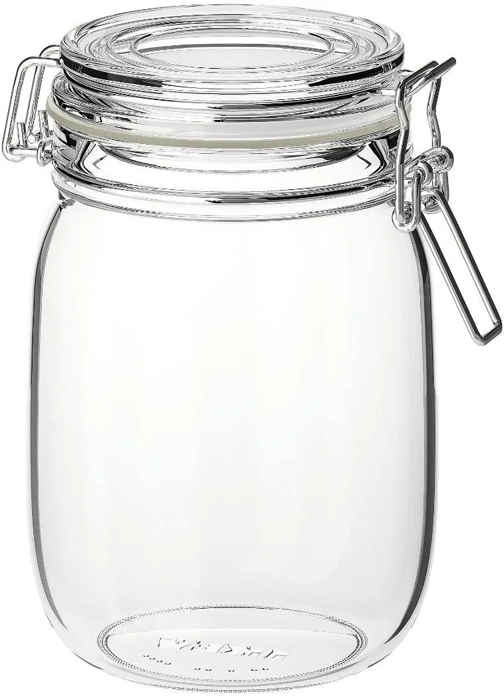
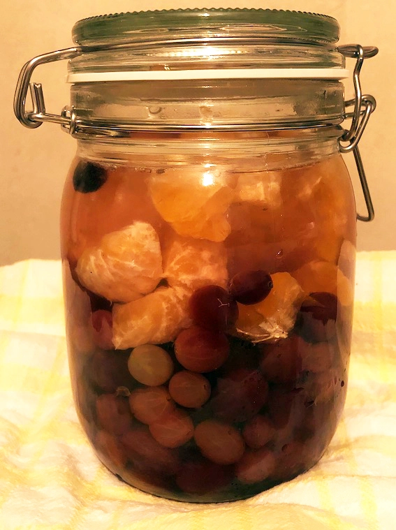
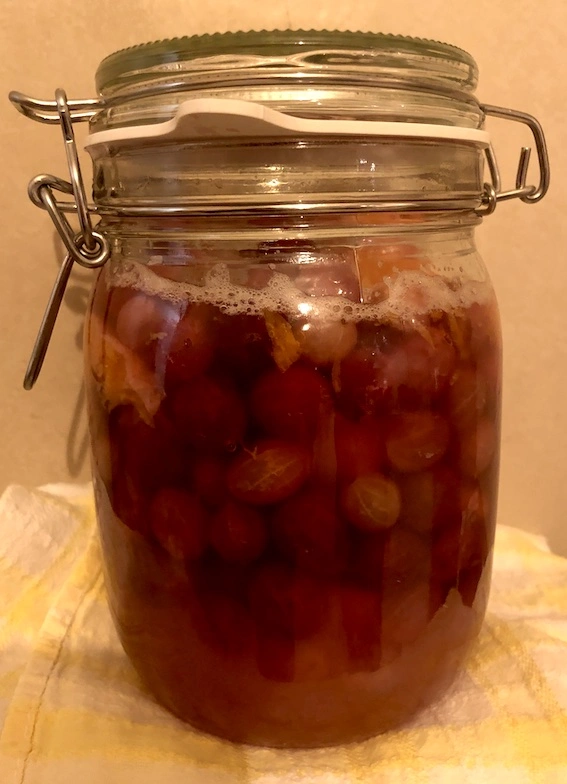
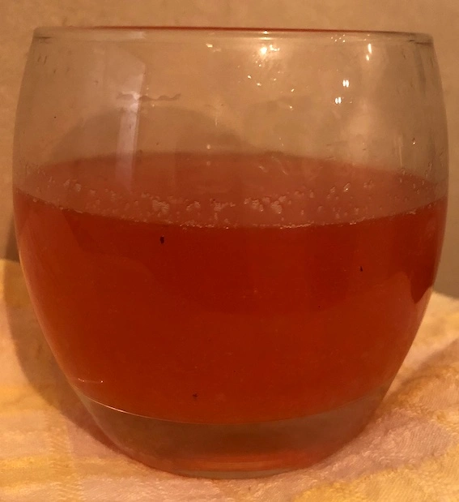

Fermenting
A couple of new Korken jars were added to our kitchen thanks to Ikea’s Live Lagom team at Warrington.
Usually when I’m preserving anything I make do with old jam jars, but nice new containers seemed to call for a step into unchartered waters. I wanted to try something different.
Some of the other Live Lagom groups have embraced the idea of kimchi (Korean salted and fermented vegetables). In Warrington, we weren’t obliged to do so and our household were unlikely to consume something along those lines. So I contemplated other fermenting options, limiting myself to using ingredients that I already had at home, even if they weren’t all going to waste per se.
I was eventually sold on the idea of trying to make kvass, which is a fermented beverage traditionally made in Eastern Europe, from beets, whey and rye bread. Not being a fan of beetroot and without any rye bread in the larder, I took a less traditional approach, using fruit, whey, honey, salt and water. An assortment of websites promised a ‘light and fruity’ soft drink, full of ‘nutritious probiotic enzymes’ and ‘amazing natural bubbles’.
Here's hoping…
A new gooseberry bush in the garden has offered up a limited amount of fruit and dry summers have meant that the fruits haven’t all be plump. Still, I’ve frozen them for a couple of years in anticipation of gathering enough for a crumble. They’d do for a fermenting experiment. I topped and tailed them just in case the fruit was suitable for eating once I’d made my kvass.
We had a couple of small oranges left over from Christmas. Past their prime for eating, but, slightly chopped, they might as well be kvass-ed too.
Into the jar went the fruit and some honey, given I’d managed to acquire several jars. That won’t happen in future now my cupboards have been re-organised (thanks to the Waste Not, Want Not week 1 challenge). A small amount of salt went in too. Whey seems to be an optional ingredient. However, I’d just made a batch of yogurt, so…why not…in went some whey. The jar was then topped up with water. Mineral water is recommended, but there wasn't a drop of that to drink in our house. Tap water was used.
Apparently, the jar, left at room temperature, needs to be shaken several times a day and any accumulated gases should be released at least once a day.
After two or three days, depending upon the temperature, the fruit can be strained out of the concoction and the liquid will be ready for consumption. It can be stored in the fridge for up to a week if not downed in one go.
Just so you know, fermented fruits can spoil quickly because the high sugar and low acid content is attractive to bacteria.
So what can you do? Ferment only for short periods. Use more salt if your fermented creation will taste OK. Add more acidic fruits to the mix. Accept that the fruit sugars have turned to alcohol...hic!
It took about four days for the liquid in the jar to gain a layer of bubbles on the surface. Well, it is January. Maybe things will be quicker later in the year.
It was time to take a deep breath and try the kvass, after pouring the liquid through a tea strainer. It was a lovely colour and not as cloudy as some recipes had suggested. I tried a small glass of it. A pleasantly tart taste and very refreshing.
My offspring grudgingly tasted it to humour me. My husband surprisingly accepted a glassful. I put the rest in the fridge expecting to drink it later only to find that it was more-ish. Others got to it before me though so I'll have to brew up another batch to double-check I like it.
There was still mileage in the fruit so no waste generated as a byproduct of the fermentation. We got a crumble for dessert!